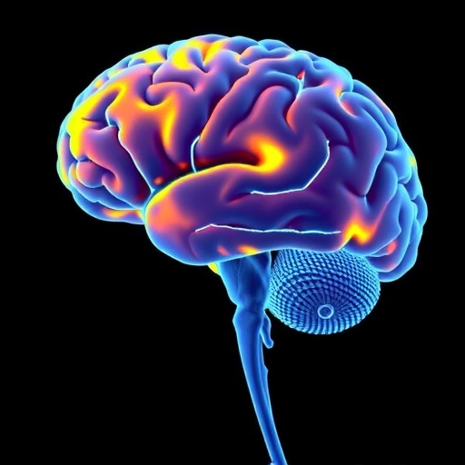
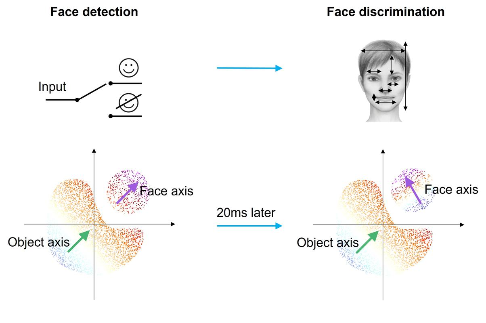
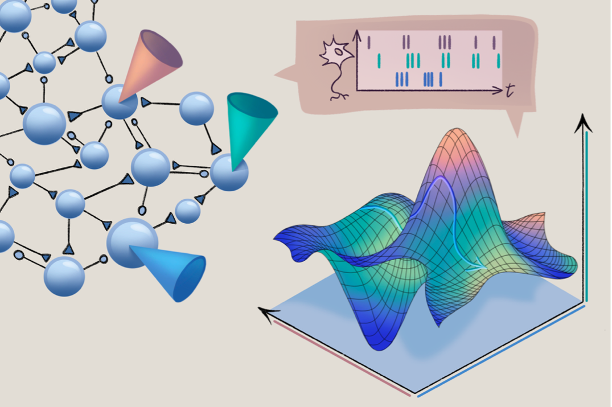
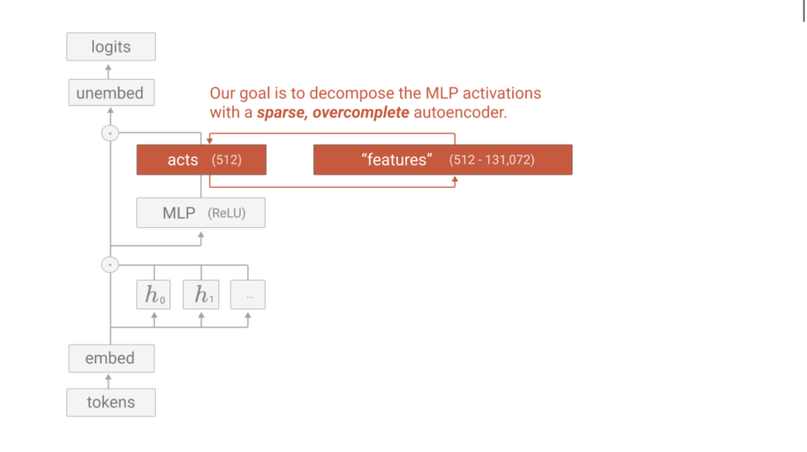
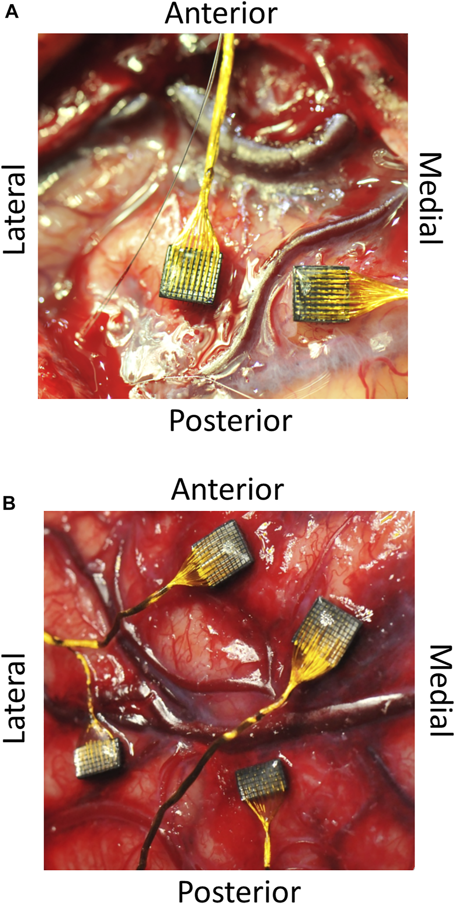

Executive Summary
In May 2026, Nature reported that a foundational premise of neuroscience is crumbling. The tidy picture of "one neuron responding to one stimulus" is collapsing under the weight of real data. Hippocampal place cells remap their firing patterns over weeks even in identical environments, and visual cortex neurons switch their coding schemes within 20 milliseconds. This phenomenon is called representational drift.
What makes this remarkable is that the problem is not confined to the brain. A strikingly parallel challenge has emerged inside large language models (LLMs). Individual artificial neurons respond to multiple semantically unrelated concepts simultaneously, a phenomenon known as polysemantic neurons. Along the time axis in the brain, and along the semantic axis in LLMs, the intuition that "one unit = one meaning" is breaking down at the same time.
Starting from the Nature article, this essay places the neuroscientific evidence for representational drift alongside LLM mechanistic interpretability research. We trace the mechanisms by which system-level stability persists despite component-level instability, and examine what this means for brain-computer interfaces (BCI) and AI design.
Key Figures
Sources: Nature 2026, Anthropic, Climer et al. 2025
~20ms
Code-switching speed
IT cortex neurons, Tsao 2026
70%
SAE monosemantic ratio
Anthropic, GPT-2 layer 6
15 days
Continuous V1 tracking
Temporal coding stability
~80
Permanent BCI recipients
Worldwide as of 2025
"This Neuron Recognizes Grandma"
In the 1960s, neuroscientist Jerry Lettvin half-jokingly proposed the concept of the grandmother cell: somewhere in your brain, there is a single neuron that fires only for your grandmother. It was a joke, but the idea was seductive. The cleanest way to understand the complex brain is to assign one role to each neuron.
In 2005, UCLA researchers actually discovered a neuron that responded only to photos of Jennifer Aniston, making worldwide headlines. The "Jennifer Aniston neuron" appeared to provide real evidence for the grandmother cell hypothesis. One neuron, one concept. Clean, intuitive, and perfect for a textbook illustration.
But in May 2026, what Nature reported was the cracking of this clean narrative. "The brain's code seems to be in constant flux. Neuroscientists are baffled." The same neuron responds differently to the same stimulus from one day to the next. The premise that each neuron does one thing may itself be wrong.
This is not a measurement error. It has been independently confirmed across multiple laboratories and observed throughout the brain: hippocampus, visual cortex, olfactory cortex, inferotemporal cortex. The assumption of a "fixed tuning function" that neuroscience relied on for half a century is being called into question.
Representational Drift: The Brain's Rewriting Code
This phenomenon has a name: representational drift. It refers to the gradual change in how neurons respond to specific stimuli over time. Same environment, same behavior, same experimental conditions, yet the neural activity patterns reorganize over days to weeks.
2.1Driscoll's Landmark Discovery
The groundwork for this field was laid by Laura Driscoll (now at the Allen Institute) in her 2017 study. She tracked neural activity in the posterior parietal cortex (PPC) while mice repeatedly navigated a virtual maze. The behavior was identical: same maze, same task, same reward. But the neural activity patterns completely reorganized over weeks. It was as if an orchestra played the same symphony from a different score each time.
2.2Not an Artifact: Climer et al. 2025
Early skeptics argued that drift might be an experimental artifact. Subtle behavioral changes or imperceptible differences in the sensory environment could produce apparent changes in neural responses. In July 2025, Climer, Davoudi, Oh, and Dombeck published a paper in Nature that directly addressed this possibility.
They used a multisensory virtual reality system to rigorously control for subtle changes in sensory environment and behavior. The results were clear: subtle differences in sensory input or behavior had no measurable effect on drift velocity. Drift was not a reflection of external factors but an intrinsic property of hippocampal coding.

2.3A Brain-Wide Phenomenon
Drift is not unique to the hippocampus. It has been observed in virtually every brain region studied: visual cortex, olfactory cortex, inferotemporal cortex, and more. The rates differ, though. Hippocampal place cells drift relatively quickly, while visual cortex neurons change slowly. This variation in speed itself suggests that drift is not random noise but a region-specific, regulated process.
The 20-Millisecond Reversal: Doris Tsao's Discovery
If representational drift is a slow change unfolding over days to weeks, Doris Tsao's discovery dramatically compressed that timescale. Her study, published in Nature in March 2026, showed that the brain's code can switch abruptly at the millisecond scale.
Tsao and her team (Yuelin Shi, Dasheng Bi) recorded face-responsive neurons at single-cell resolution in the inferotemporal (IT) cortex of non-human primates. The IT cortex had long been the flagship example of "the brain region that works like a deep network." Each neuron was thought to respond to specific facial features in a fixed manner.
What they actually observed was different. These neurons switched their coding scheme entirely within about 20 milliseconds. First, they operated with a general detection code ("Is this a face?"), then instantly shifted to a specialized identification code ("Whose face is this?").
"The idea that cells have a static tuning function just isn't true," Tsao said. This is a direct challenge to an assumption maintained for nearly half a century. Temporal multiplexing, where a single neuron performs different computations at different times, reveals that the brain's information processing is far more dynamic than previously thought.
There is an irony here. The IT cortex was the poster child for the claim that "the brain works like a deep network." The hierarchical model, in which neurons at each layer extract increasingly complex features, seemed to fit this region best. It was in this very region that neurons turned out not to be locked into a single role.

Why Do We Perceive a Stable World?
This raises a fundamental paradox. If the neural code is constantly changing, how can we find the same coffee shop every day? If yesterday's and today's neural patterns differ, how does the world appear stable?
4.1Population Coding: Preserving Geometry
The most compelling answer lies in population coding. A 2025 bioRxiv preprint demonstrated this mathematically. Individual CA1 neurons' spatial tuning functions drift over time, but the drift can be described as translations and rotations in the population state space. The key finding: the internal geometry of population activity is preserved over time.
Think of an orchestra where musicians swap seats. The position where each sound originates changes, but the logical structure of the score, the harmonic progressions and melody lines, remains intact.

4.2The Robustness of Temporal Coding
A 2025 study in Nature Communications offered another mechanism. The research team used ultra-flexible electrode arrays to track the same population of mouse visual cortex neurons for 15 consecutive days. Firing-rate-based tuning fluctuated from day to day. That is representational drift. But the millisecond-scale spike timing patterns, the temporal code, were far more stable.
The brain encodes more reliable information in "when it fires" than in "how often it fires." The surface-level metric of firing rate may wobble, but the temporal structure beneath it holds firm.
4.3Dissenting Voices
Not all neuroscientists agree on the universality of drift. UC Berkeley's Michael Yartsev has reported stable activity patterns in bat hippocampus. Juan Gallego of the Champalimaud Centre argues that drift may reflect subtle behavioral changes that experimenters fail to measure. This debate itself shows that drift research is still in its early stages.
LLM Neurons Harbor the Same Problem
If biological neurons shift their meaning along the time axis, LLM neurons play multiple roles simultaneously along the semantic axis. These are polysemantic neurons: a single artificial neuron activates for semantically unrelated concepts like "baseball" and "grocery lists."
5.1Superposition: Inevitable Overlap
Why does this happen? Anthropic's researchers explain it through the superposition hypothesis. Because the number of features a model needs to represent far exceeds its number of neurons, the model superimposes multiple features onto a limited set of neurons. This is not a design flaw but a consequence of resource efficiency. It is essentially the same compression problem the brain faces with 86 billion neurons representing every concept in the world.
5.2SAE: From Tangled Neurons to Clean Features
Anthropic tackled this problem using Sparse Autoencoders (SAE). They trained on 8 billion residual stream activations from GPT-2 Small's layer 6, expanding by 16x to extract approximately 15,000 latent directions. Human evaluators confirmed that about 70% mapped cleanly to single concepts.
In 2024, Anthropic (Claude 3 Sonnet) and OpenAI (GPT-4) applied SAEs to their frontier models for the first time. By 2025, crosscoders for analyzing feature differences across models and cross-layer transcoders for sparser, more interpretable circuit representations had been published.

5.3Structural Symmetry
Placing the brain and LLM problems side by side reveals a striking structural symmetry.
| Dimension | Biological Brain | LLM |
|---|---|---|
| Core problem | One neuron codes for different things over time | One neuron codes for multiple concepts simultaneously |
| Source of stability | Population coding, temporal coding, geometric preservation | Feature-level representation (extracted via SAE) |
| Interpretability tools | Electrode recordings + manifold analysis | SAE, TransformerLens, Crosscoder |
| Key lesson | You can't understand the brain by looking at individual neurons | You can't understand an LLM by looking at individual neurons |
The axis of instability differs. In the brain, it runs along time; in LLMs, along semantic space. But the essence is the same. You cannot understand the system by examining individual units. In both brains and LLMs, meaning is encoded not in individual neurons but in the relationships among populations of neurons.
Drift Is a Feature, Not a Bug
At first glance, representational drift looks like a defect. How can unstable code be beneficial? Yet a growing number of researchers believe drift is not mere noise but serves adaptive functions.
6.1Three Functional Hypotheses
Three major hypotheses have been proposed.
- • Time encoding: The state of drift itself carries temporal information. "When was this memory formed?" can be estimated from the amount of change in neural patterns.
- • Experience integration: New experiences are incorporated into existing memory representations, reorganizing the code. Drift is the process of memory updating.
- • Cognitive flexibility: Fixed code makes learning new patterns difficult. Moderate instability acts as lubrication, preventing neural circuits from becoming rigid.
6.2The Same in Artificial Neural Networks
Intriguingly, similar phenomena are observed in artificial neural networks. The internal representations of models trained with SGD (stochastic gradient descent) gradually shift as they explore the solution space. This connects directly to the stability-plasticity dilemma, the central challenge in continual learning. To retain past knowledge while acquiring new information, representations need appropriate fluidity.
In both biological brains and artificial neural networks, instability may be the very source of adaptability. A completely fixed system is stable but brittle; a system that appropriately fluctuates can better cope with a changing environment.
Practical Implications: BCI, AI, Interpretability
7.1BCI: The Double-Drift Challenge
For brain-computer interfaces (BCI), representational drift goes beyond academic curiosity to become an engineering reality. As of 2025, there are only about 70 to 80 permanent BCI recipients worldwide. Their devices face a double-drift problem: electrode drift, where the electrode physically shifts in microscopic increments, and neural drift, where the neurons' coding patterns change, occur simultaneously.
The emerging solution is few-shot adaptive decoding via on-device ML. Instead of using a fixed decoder each day, the decoder is rapidly retrained with a small amount of calibration data. This is considered one of the most important technical advances in the BCI field for 2026.

7.2AI Design: The Promise of Temporal Multiplexing
Tsao's finding, that a single neuron performs different computations at different times through temporal multiplexing, could directly inspire AI architecture design. Current neural networks have each neuron performing a single operation with fixed weights. If neurons could dynamically perform different operations depending on the temporal context of the input, the same number of neurons could perform more computations. This would benefit both energy efficiency and model size.
7.3Interpretability: Beyond Individual Neurons
Both neuroscience and AI research have arrived at the same conclusion: systems must be understood at the feature and circuit level, not at the level of individual neurons. Anthropic has set the goal of "interpretability reliably detecting most model problems" by 2027. The prerequisite for this goal is elevating the unit of analysis from individual neurons to features.
7.4The Data Quality Connection
A common question lies beneath all of these discussions: what does it take to extract stable patterns from unstable components? In neuroscience, population decoding and manifold analysis are needed. In LLMs, SAE and circuit analysis are needed. In data science, this is the problem of data quality diagnostics. To predict model behavior, we must look beyond the variability of individual data points and understand the structural properties of the dataset as a whole.
Editor's Note. Reading stable structure from unstable components is a familiar problem in data diagnostics. DataClinic's focus is not on individual image defects but on the distribution, inter-class relationships, and intrinsic structure of entire datasets. The fact that neuroscience and AI interpretability have independently converged on this same question is, to us, genuinely interesting.
What Brains and AI Teach Us Together
"One unit = one meaning." This intuition holds in neither brains nor LLMs. Neuroscience and AI research have, without knowing of each other, hit the same wall and are developing similar tools. Just as neuroscientists use population coding and manifold analysis to find stability beyond drift, AI researchers use SAEs and crosscoders to extract clean features beyond polysemantic neurons.
Complex systems function despite the instability of their components. This may not be despite the instability but perhaps because of it. Appropriate fluidity allows systems to learn new things, adapt to changing environments, and avoid rigidity.
The next question remains open: how is stable intelligence built from unstable parts? If we can answer this, we will understand both brains and AI at a deeper level. And the answer will likely come not from staring at a single neuron, but from reading the geometry of the patterns that neurons create together.
Pebblous Data Communication Team
June 4, 2026
Frequently Asked Questions
References
Academic Papers
- 1.Shi, Y., Bi, D. & Tsao, D. (2026). "Rapid concerted switching of the neural code in the inferotemporal cortex." Nature.
- 2.Climer, J. R., Davoudi, H., Oh, J. Y. & Dombeck, D. A. (2025). "Hippocampal representations drift in stable multisensory environments." Nature.
- 3.Nature Communications (2025). "Temporal coding carries more stable cortical visual representations than firing rate over time."
- 4.bioRxiv (2025). "Coordinated representational drift supports stable place coding in hippocampal CA1."
- 5.Driscoll, L. N., Duncker, L. & Harvey, C. D. (2022). "Representational drift: Emerging theories for continual learning and experimental future directions." eLife.
- 6.arXiv (2024). "Learning continually with representational drift."
- 7.Nature Physics (2026). "Simple input-output dependencies explain neuronal activity."
Industry & Press
- 8.Nature News (2026.05.20). "The brain's code seems to be in constant flux. Neuroscientists are baffled."
- 9.Caltech (2026). "Fixed or Flexible? Study Shows Vision-Related Neurons Can Rapidly Switch Codes."
- 10.Anthropic (2025). "Circuits Updates — July 2025." Transformer Circuits Thread.
- 11.Anthropic (2025). "Crosscoder Model Diffing."
- 12.Nanda, N. (2023). "A Comprehensive Mechanistic Interpretability Glossary."